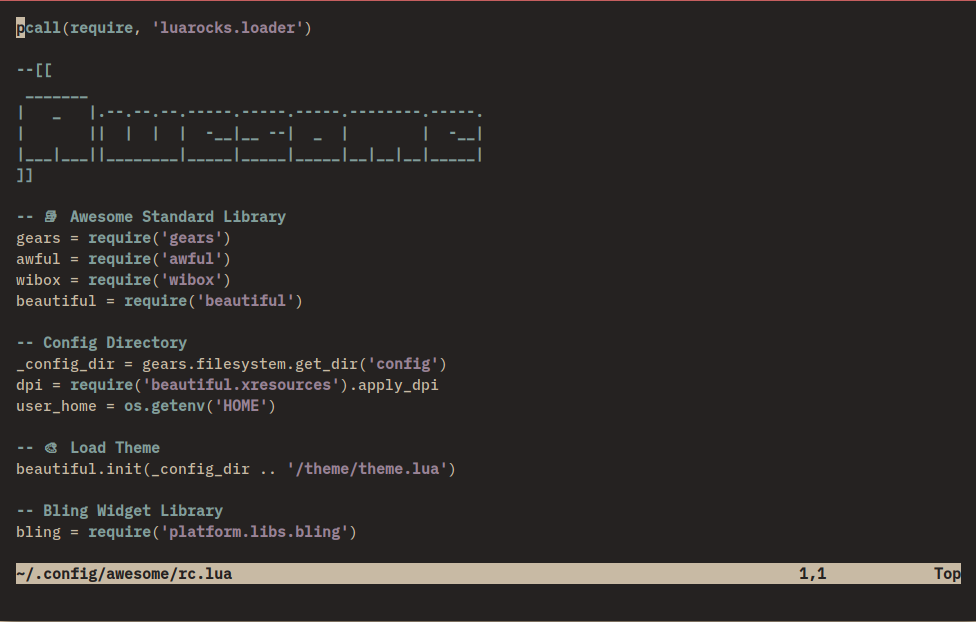

🥟 A Ricing Roadmap
There is a lot of choice when you start ricing and there are so many things you can dive into that it can easily become overwhelming, So this is a kind of road map I wrote of what things you should do in what order to really understand if you like ricing.
DISCLAIMER: There are many different ways to go about ricing, After all ricing is about creative expression and even more about making your desktop comfortable for yourself. There are a million different things you can change and add to make it more personal.
Let’s begin:
From the perspective of someone who has recently installed a common distribution and has seen one of the posts on unixporn and wants to also make his desktop look like it.
To have some kind of idea of what our final product will be, Let us aim for something similar to this (w/ the same stuff, style will be different ofc)

Necessary Pre-requisite Knowledge
- Ricing terminology [LEARN]
- Basic linux knowledge
- Filesystem Navigation
- Configuration File Editing
- Install packages (varies a little by distro)
Installing a WM
Settling Down
Finding / Creating a color scheme
This is the foundation the rest of your design will sit upon, The color scheme you choose can easily make or break a rice, So it is vitally important to pick a good looking one and build everything around it.
The colours must match with each other and any shade should look good with any other from the same scheme no matter exactly how its used.
Your colour scheme can have as many colours as you desire but at minimum there must 8 colours and ideally you have 16 colours.
These 16 are split into 2 groups, “regulars” and “brights”, If you have only 8 colours then your “brights” will be the same as your “regulars”
#TABLE Regular Bright Name 00 08 Black 01 09 Red 02 10 Green 03 11 Yellow 04 12 Blue 05 13 Magenta 06 14 Cyan 07 15 White #END TABLE
It’s also important that your colour scheme work well for syntax highlighting (& be semantic) and be suitable for using in GUI environments.
For an example, Here are some ones I really like:
- https://github.com/savq/melange
- https://github.com/sainnhe/gruvbox-material
- https://github.com/rose-pine/rose-pine-theme
- https://gitlab.com/snakedye/chocolate
Wallpaper
After some time, looking at the plain black default background gets tiring so let’s set a pretty background, This may seem like a small step but the background you choose can heavily affect the colors you can use in the rest of your rice. So ideally pick something you can contrast easily and one that isn’t visually busy, Your focus shouldn’t be immediately attracted to wallpaper at first sight.
- You can find some good places to find wallpapers here: https://nes.is-a.dev/ricing-guide/how-to-rice-thing.html#wallpapers
Especially for minimalist window managers, it is common that they do not include wallpaper setter in which case an external application (usually feh) needs to be used.
To illustrate:
 is an example of what I’d call a good wallpaper, it can easily with a color scheme like melange or gruvbox material and there is plenty of contrast to place any desktop widgets if I so choose, of course you have to like it too, its your desktop after all.
is an example of what I’d call a good wallpaper, it can easily with a color scheme like melange or gruvbox material and there is plenty of contrast to place any desktop widgets if I so choose, of course you have to like it too, its your desktop after all.
Getting Comfortable
So now we have the very start of a rice, We have chosen a color scheme and we have a wallpaper to go with it, From here our rice can go wherever you want it to really.
Since we are going to be editing all our configuration files from within our text editor, We should start with ricing that and becoming comfortable in it.
Editor
I’m writing this with neovim in mind but I’ll try to make it as general as possible. I’ll just go through the steps to make your editor to fit in your rice and some extra steps you can take for beautification.
When using neovim with the default colors, this is what we get, Nothing much to look at is it. 
Let’s at least start by matching colours with our chosen colour scheme, Depending on whether you made your colour scheme yourself, there will probably already exist a theme made by some poor soul to fit. This becomes less likely on other editors. If you made a base16 theme this isn’t really a concern as from how base16 themes work, one can be generated from just the set of colours.
Making a theme for VIM (VimScript)
If such a theme doesn’t exist, It isn’t a big problem since Vim makes it fairly simple to create a theme.
Read :help highlight & :help colorscheme & :help coloring
Basically every thing with colour in vim belongs to a highlight group that specifies things like foreground background & text style. The styles for every highlight group can be modified with the highlight command from vimscript
For an example, here is a snippet of the port of the chocolate theme I made for vim:
" Typescript
hi TSVariableBuiltin guifg=#d9b27c
hi TSField guifg=#998396
hi TSParameter guifg=#859e82
hi cTSFuncMacro guifg=#d9b27c
hi cStructure guifg=#829e9b
hi cTSConstant guifg=#ab9382
hi TSBoolean guifg=#d08b65
hi cTSKeywordOperator guifg=#829e9bt
" User Interface
hi VertSplit cterm=none gui=none guibg=bg guifg=#302c2b
hi StatusLine guibg=#3d3837 cterm=none gui=none
hi EndOfBuffer guibg=bg guifg=bg
hi StatusLineNC guibg=#302c2b gui=none cterm=none
[Full File]
If you spend time configuring extension appearances (Some are astoundingly bad at following default highlight groups) too it can take some time but the basic UI & syntax hl groups shouldn’t take too long.
Terminal
All terminals will allow you to customize the 16 colour palette that they use in accordance with what I documented before in the colour schemes section
Each terminal is configured differently so consult the manual page for your own. If you’re still using gnome-terminal or xfce-terminal or such and are wanting for more, see this comparison I made
Besides colours another thing worth customizing is the padding of the terminal window, I find around 16px to be a good amount, anything less than that is too little. This of course depends on your screen size but it makes sense for me on a 1600x900 laptop screen.
The other thing you can do is change the terminal font, Most terminals default to using the monospace font alias (I think), But it’s usually something like Liberation Mono which isn’t much to look at, You can find some decent font choices in the design document. Take note to install a nerd font variant if you can find one, it’ll help solve some icon issues down the road.
— 🚧 This article is still undergoing construction —